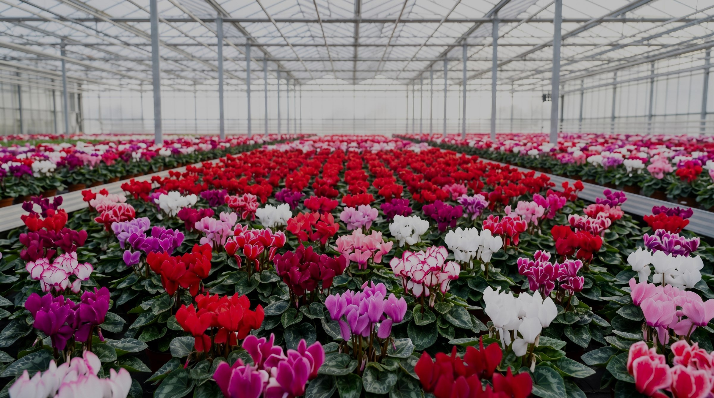
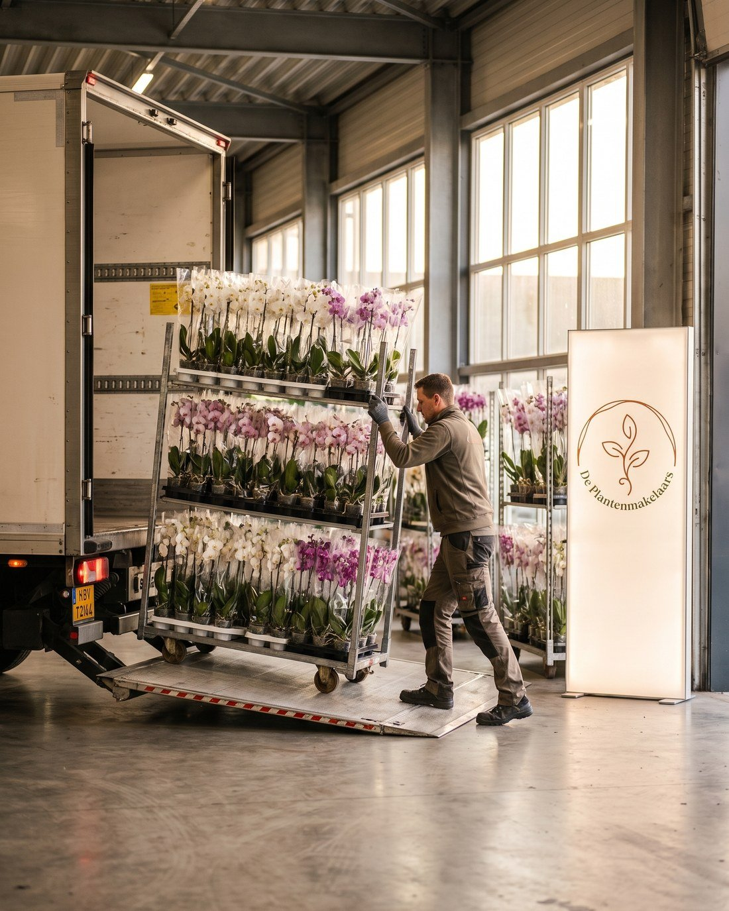
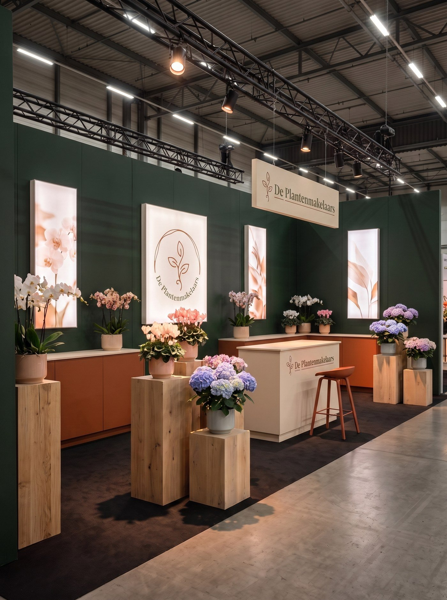
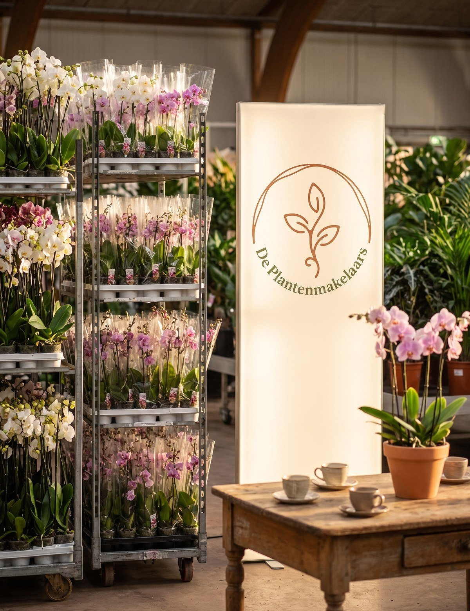
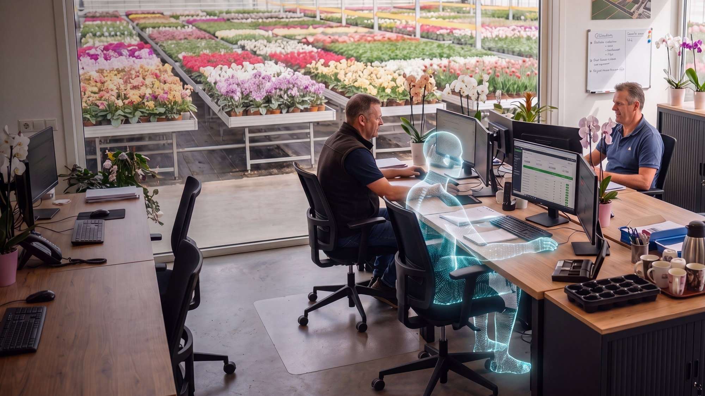
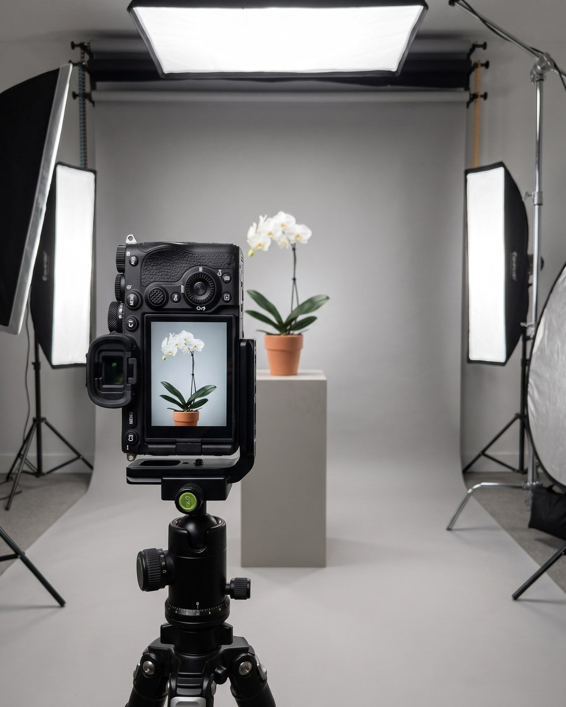
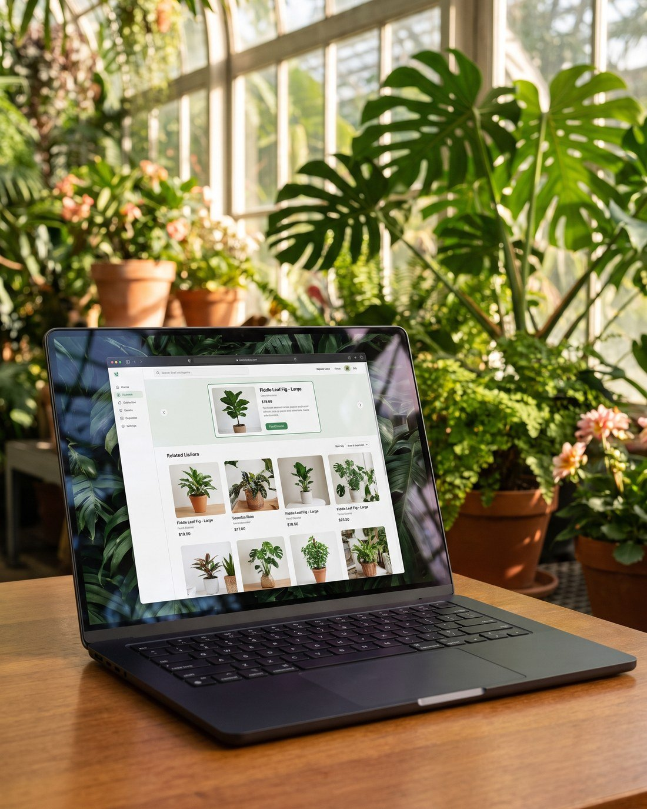
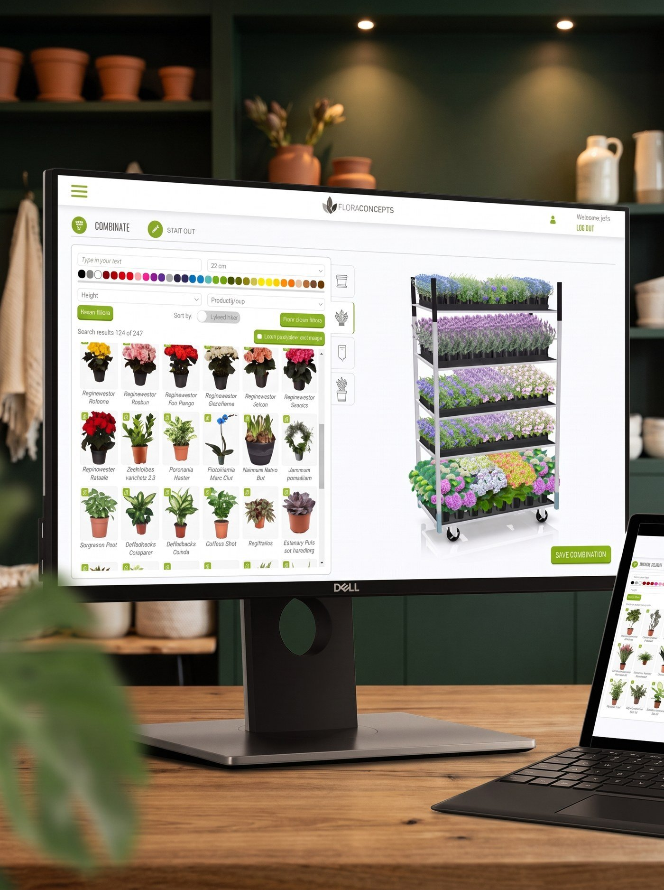

DienstenServices
Hoe we jou
laten groeienHow we
help you grow
Van verkoop en beurzen tot data, fotografie en Floriday, wij ontzorgen de kweker van a tot z.From sales and trade fairs to data, photography and Floriday, we unburden the grower from A to Z.
01 · VerkoopSales
Daghandel, actie
& harde retailDay trade, promo
& hard retail
Verkoop is waar het bij ons om draait. Elke dag brengen we jouw handel bij de juiste kopers, via daghandel, acties en harde retail. Van exporteurs tot de grote ketens en tuincentra: alle contacten zijn aanwezig en de lijntjes zijn kort. Wij verkopen jouw product precies wanneer het op z'n mooist is, volledig ontzorgd, zodat jij je op de teelt kunt richten.Selling is what it's all about for us. Every day we bring your trade to the right buyers, through day trade, promotions and hard retail. From exporters to the major chains and garden centres: all the contacts are in place and the lines are short. We sell your product exactly when it's at its best, fully taken care of, so you can focus on growing.
- Daghandel, actie en harde retailDay trade, promotions and hard retail
- Alle contacten aanwezig, van exporteurs tot tuincentraAll contacts in place, from exporters to garden centres
- Jouw handel in vertrouwde handenYour trade in trusted hands

0102 · BedrijfsadviesBusiness advice
Sparringpartner
op de kwekerijSparring partner
at the nursery
Bij ons kun je met meer terecht dan alleen je handel. Zit je met een vraag over strategie, marketing, teelt of de koers van je bedrijf, dan denken we graag met je mee. Tachtig jaar ervaring maakt ons een sterke sparringpartner, en die kennis delen we altijd graag.With us you can turn to more than just your trade. Have a question about strategy, marketing, cultivation or the direction of your business? We're happy to think along. Eighty years of experience makes us a strong sparring partner, and we love to share that knowledge.
BedrijfsstrategieBusiness strategy
De koers voor de lange termijn, met een frisse blik van buitenaf.Your long-term course, with a fresh outside perspective.
MarketingMarketing
Jouw merk en product sterker en zichtbaarder in de markt.Your brand and product stronger and more visible in the market.
BedrijfsvoeringOperations
Slimmer, efficiënter en gezonder ondernemen.Smarter, more efficient and healthier business.
OntwikkelingDevelopment
Nieuwe producten, nieuwe kansen en groei.New products, new opportunities and growth.
TeeltCultivation
Meedenken over kwaliteit, assortiment en de juiste keuzes.Thinking along on quality, assortment and the right choices.
PrijsstrategiePricing strategy
De juiste prijs op het juiste moment.The right price at the right moment.

0303 · FloraHollandFloraHolland
Thuis op de
Trade FairAt home at the
Trade Fair
De FloraHolland-beurzen zijn dé internationale ontmoetingsplek van de sierteelt, en twee keer per jaar zijn wij er groots aanwezig. We zetten de artikelen van onze kwekers volop in de spotlight, en iedereen is erbij, velen met een eigen stand. Het is één grote gezelligheid, en tegelijk staat iedereen er met hetzelfde doel: laten zien wat hén uniek maakt. Zo komt jouw product volop in beeld bij duizenden kopers uit meer dan 140 landen. En de gastvrijheid regelen wij, met koffie en een drankje voor iedereen en een verzorgde lunch voor onze kwekers.The FloraHolland fairs are the international meeting place of floriculture, and twice a year we're there in force. We put our growers' products firmly in the spotlight, and everyone is there, many with their own stand. It's one big get-together, and at the same time everyone is there with the same goal: to show what makes them unique. That's how your product gets full exposure to thousands of buyers from more than 140 countries. And we take care of the hospitality, with coffee and a drink for everyone and a proper lunch for our growers.
- Jouw artikelen volop in de spotlightYour products firmly in the spotlight
- Een grote, gezellige beursbeleving voor jou en je klantenA big, sociable fair experience for you and your customers
- Een verzorgde lunch voor onze kwekersA proper lunch for our growers
04 · FloriWorldFloriWorld
Jouw handel op
de karrenbeursYour trade at
the cart fair
Acht keer per jaar staan we op de FloriWorld-beurzen, precies wanneer jouw handel op z'n mooist is. Zo staat jouw product het hele jaar door volop in de spotlight bij de juiste kopers.Eight times a year we're at the FloriWorld fairs, exactly when your trade is at its best. So your product stays in the spotlight with the right buyers all year round.
Op FloriWorld presenteren we jouw handel op Deense karren. De beurs loopt de hele dag door en in de prime time van 9.00 tot 13.00 uur ben je er als kweker zelf bij, inclusief lunch. Want persoonlijk contact verkoopt. En het fijne: alles wat op de kar staat wordt verkocht. Geen retourhandel en geen gedoe achteraf, jouw product is verkocht en klaar. Je aanbod geef je vooraf op via beursaanbod.nl en klikt uit je Floriday-assortiment aan wat je presenteert. Kopers scannen ter plekke de QR-code en zien alles terug in de beursapp.At FloriWorld we present your trade on Danish trolleys. The fair runs all day and during the prime time from 9.00 to 13.00 you're there yourself as a grower, lunch included. Because personal contact sells. And the best part: everything on the trolley gets sold. No return trade and no hassle afterwards, your product is sold and done. You submit your offer beforehand via beursaanbod.nl and click what you'll present from your Floriday assortment. Buyers scan the QR code on the spot and see it all in the fair app.
- Acht FloriWorld-beurzen per jaarEight FloriWorld fairs a year
- Jouw handel op Deense karren, altijd verkochtYour trade on Danish trolleys, always sold
- Kwekers erbij van 9.00 tot 13.00 uur, inclusief lunchGrowers present from 9.00 to 13.00, lunch included
- Aanbod via beursaanbod.nl, kopers scannen de QR-codeOffer via beursaanbod.nl, buyers scan the QR code

04
05 · Data & AIData & AI
Jouw nieuwe collega:
FTE DigitalYour new colleague:
FTE Digital
Met FTE Digital van Data Botanica zetten we de kracht van AI in om tijd te besparen, en die tijd steken we in wat écht telt: het persoonlijke gesprek. Dáár maken wij het verschil. De cijfers vertellen ons wat er speelt, en met die kennis staan we bij jou en je klanten op de stoep. Zo houd jij meer tijd over voor je planten, en je kopers voor hún eindklant. Geen dagen cijfers pluizen, maar de gesprekken voeren die tot echte, diepere samenwerking leiden. Dat is de volgende stap in de sierteelt, die zetten we graag samen.With FTE Digital by Data Botanica we use the power of AI to save time, and we spend that time on what really counts: the personal conversation. That's where we make the difference. The numbers tell us what's going on, and with that insight we show up at your door and your customers'. So you keep more time for your plants, and your buyers for their end customers. No days lost analysing figures, but having the conversations that lead to real, deeper collaboration. That's the next step in floriculture, and we'd love to take it together.

0606 · Fotografie & beeldbewerkingPhotography & editing
Eigen topfotografie
voor de kwekerIn-house top
photography
Fotografie maakt het verschil. In de sierteelt wordt vrijwel alles ingekocht op basis van beeld: een koper ziet jouw plant eerst op de foto, niet in het echt. Een sterke foto laat de plant op z'n mooist zien en trekt de aandacht, juist tussen het enorme aanbod in de handelsplatformen. Daar springt jouw product eruit, of het verdwijnt in de rij.Photography makes the difference. In floriculture almost everything is bought based on imagery: a buyer sees your plant on the photo first, not in real life. A strong photo shows the plant at its best and grabs attention, especially amid the huge offering on the trading platforms. That's where your product stands out, or disappears in the crowd.
Bij ons doet Wouter de fotografie. Hij maakt de meest professionele productfoto's met de beste apparatuur op de markt en heeft er inmiddels ruim 30.000 op zijn naam staan. Strak, uniform en klaar voor Floriday en elk verkoopkanaal. Met Photoshop en Lightroom perfectioneert hij beeld en kleur, helemaal afgestemd op jouw product.Wouter handles our photography. He shoots the most professional product photos with the best equipment on the market and has over 30,000 to his name by now. Crisp, uniform and ready for Floriday and every sales channel. With Photoshop and Lightroom he perfects image and colour, fully tailored to your product.
Benieuwd wat dat oplevert? Bekijk de galerij hieronder.Curious what that delivers? Take a look at the gallery below.
07 · Floriday & platformenFloriday & platforms
Zichtbaar op
elk platformVisible on
every platform
De kennis van Floriday hebben we van a tot z in huis; ook daarin ontzorgen we je volledig. We zorgen dat je zichtbaar bent op de platformen van nu én de toekomst, en geven startende producten op het juiste moment nieuwswaarde bij de koper.We have full A-to-Z Floriday expertise in house and take that work off your hands completely. We make sure you're visible on today's platforms and tomorrow's, and give new products news value with the buyer at exactly the right moment.

07
0808 · FloraconceptsFloraconcepts
Digitale karren,
net als op de beursDigital trolleys,
just like at the fair
Wij bouwen digitale karren, zodat jouw handel ook online precies zo gepresenteerd wordt als op de beurs. Een koper ziet in één oogopslag hoe jouw product op de kar staat, met de juiste sfeer, samenstelling en presentatie. Zo blijft de kracht van de fysieke beurs behouden, óók op de handelsplatformen, en springt jouw handel eruit tussen het enorme aanbod.We build digital trolleys, so your trade is presented online exactly as it is at the fair. A buyer sees at a glance how your product sits on the trolley, with the right look, composition and presentation. This keeps the power of the physical fair intact, on the trading platforms too, and makes your trade stand out amid the huge offering.

Samen jouw product
laten groeien?Grow your
product together?
Een innovatieve verkooporganisatie voor kwekers. Data én persoonlijke aandacht.An innovative sales organisation for growers. Data and personal attention.